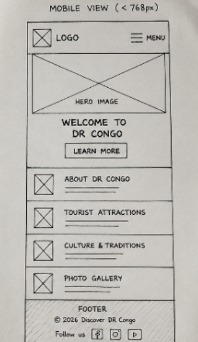
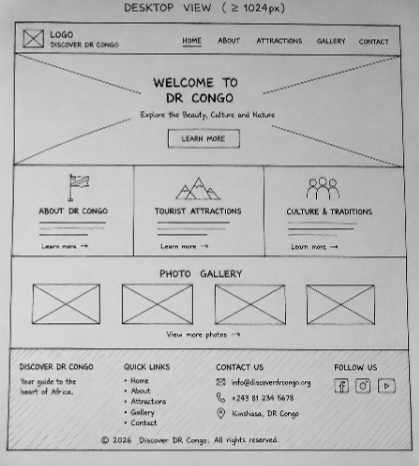

Site Name
Discover DR Congo
This name was selected because it clearly represents a website dedicated to exploring the Democratic Republic of the Congo. The website will introduce visitors to the country's culture, provinces, wildlife, history, and tourist attractions.
Optional Domain: discoverdrcongo.org
Site Purpose
The purpose of this website is to provide educational and travel information about the Democratic Republic of the Congo. Visitors can learn about the country's provinces, national parks, culture, languages, tourist attractions, history, and important facts.
Scenarios
- What are the most popular tourist attractions in the Democratic Republic of the Congo?
- Which provinces and national parks should I visit during my trip?
Color Scheme
- Dark Green (#006633) – Headings, navigation, buttons.
- Gold (#FFD700) – Highlights and accents.
- Light Gray (#F5F5F5) – Page background.
- Dark Gray (#333333) – Paragraph text.
Typography
- Poppins – Main headings.
- Roboto – Body text.
Wireframe
Mobile View

Desktop View

Create these wireframes by hand, take a picture, and save them in the images folder.